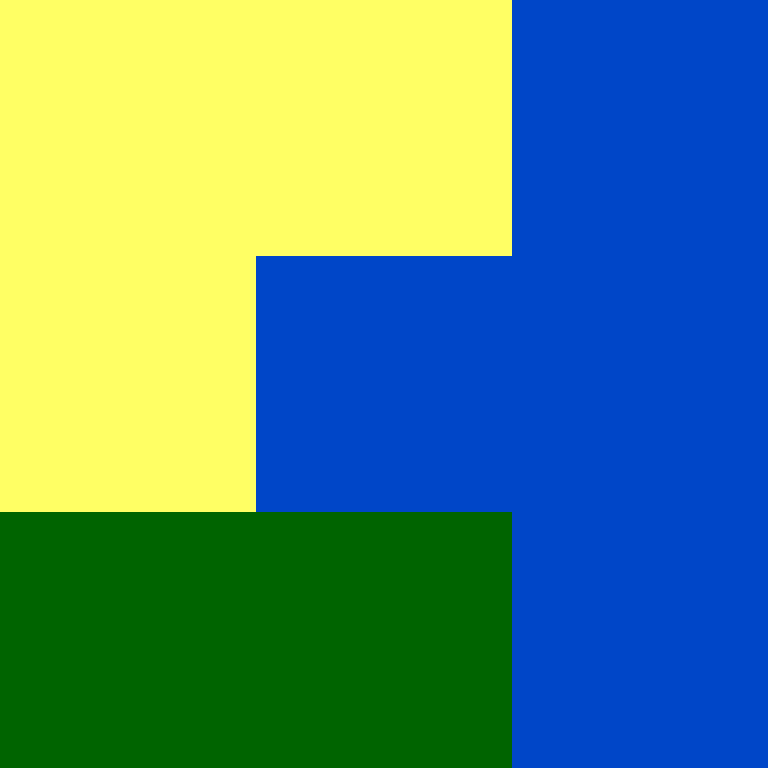

coma.RmdThis vignette explains what a co-occurrence matrix (coma) representation is and how to calculate it using the comat package. The examples below assume the comat package is attached, and the raster_x dataset is loaded:
Categorical raster data is used to store and analyze the spatial distribution of some distinct classes, such as land cover categories or soil classes. A simple example can be seen below:

We can imagine that yellow color represents agriculture, green is forest, and blue represents water. However, this data is not stored as a set of colors, but rather as a matrix, where each value can be connected to some color:
#> [,1] [,2] [,3]
#> [1,] 1 1 3
#> [2,] 1 3 3
#> [3,] 2 2 3The value of 1 is agriculture, 2 is forest, and 3 represents water. It is reasonably easy to describe this data (landscape) in words: 4/9 (~44%) of the area is covered by water, 3/9 (~33%) by agriculture, and 2/9 (~22%). Water is located in the central and east part of the area, agriculture in the west and north part, while forest in the south-western part.
This example is tiny, with just nine different square areas/cells (a grid of three by three cells). However, categorical rasters used in standard analyses are usually many times larger, with grids of millions or even billions of cells. It is not possible to concisely describe these large datasets using the same approach as above.
This is exactly a role for a co-occurrence matrix (coma) representation. It goes to each cell, looks at its value, looks at the values of its neighbors (either four or eight direct neighbors, see below), and count how many neighbors of each class our central cell has.
We can use the get_coma() function to calculate this co-occurrence matrix (coma) representation for our small raster:
This output shows that cells of the first category are four times adjacent to other cells of this category, two times cells of the second category are adjacent to other cells of this category, and six times cells of the third category are adjacent to cells of the third category. We can also see that one time cell of the first category is adjacent to any other cells of the second category, and so on. This way, we can compactly describe spatial relationships between categories, but also if we just count values in rows (or columns), we can see proportions of each category. Therefore, this representation describes both the composition and spatial configuration of the values.
By default, the get_coma() function uses 4-neighborhood, composed of a central cell and its four adjacent cells (they share a border). However, it is also possible to use 8-neighborhood, where adjacent cells with just shared points are also used:
Finally, we are sometimes not interested in some spatial relationships. For example, we just want to know the relationship between agriculture and forest. Then we can adjust the classes argument in get_coma():
The co-occurrence matrix (coma) representation is two-dimensional, with values of categories in row and columns. It can be also converted into a one-dimensional representation called a co-occurrence vector (cove) using the get_cove() function. This function takes the output of get_coma() and restructure it into one row with many columns. It also makes it possible to normalize the output to sum to one (normalization = "pdf").
my_coma = get_coma(raster_x)
get_cove(my_coma, normalization = "pdf")
#> [,1] [,2] [,3] [,4] [,5] [,6] [,7]
#> [1,] 0.1666667 0.04166667 0.125 0.04166667 0.08333333 0.08333333 0.125
#> [,8] [,9]
#> [1,] 0.08333333 0.25This representation can be useful to compare many areas with each other using measures of the similarity between two probability distributions, such as Jensen–Shannon divergence.
To learn more about the co-occurrence matrix (coma) representation, you can read two blog posts: Pattern-based Spatial Analysis - core ideas and Information theory provides a consistent framework for the analysis of spatial patterns.